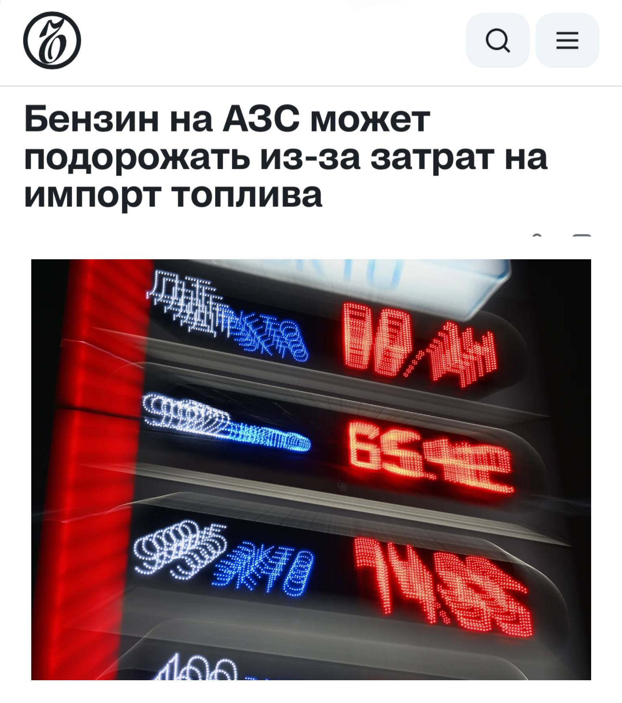

Тачки и Точка
@tachki
Тачки и Точка
@tachki
Бензин и дизель в России могут подорожать ещё на 21 рубля за литр Минэнерго предложило переложить часть убытков нефтекомпаний на водителей.

Бензин и дизель в России могут подорожать ещё на 2,1 рубля за литр — Минэнерго предложило переложить часть убытков нефтекомпаний на водителей.
Из-за санкций и дорогой логистики каждый литр импортного топлива обходится компаниям в дополнительные 13-18 рублей даже с учётом господдержки. Вместо компенсаций из бюджета власти рассматривают надбавку к ценам на АЗС.
В итоге за год бензин может прибавить 7,1 рубля за литр, а летний дизель — 8,2 рубля.
🚙 Тачки и Точка
Из-за санкций и дорогой логистики каждый литр импортного топлива обходится компаниям в дополнительные 13-18 рублей даже с учётом господдержки. Вместо компенсаций из бюджета власти рассматривают надбавку к ценам на АЗС.
В итоге за год бензин может прибавить 7,1 рубля за литр, а летний дизель — 8,2 рубля.
🚙 Тачки и Точка